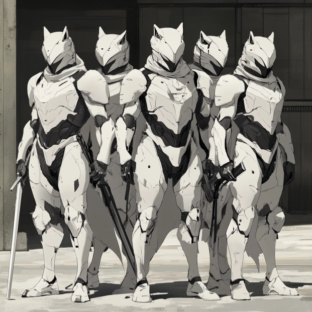

The White Wolves

Core Business:
- High-priced assassination contracts
- Corporate sabotage and hostile takeovers
- Wetwork for criminal organizations
- Target elimination with "messages sent"
-
No children or civilian mass casualty contracts, but
otherwise, take any job for the right price
Signature Methods:
- Leave white wolf cards on victims
- Always kill all witnesses
- Stage deaths to look like ritual killings
- Record executions for client proof
- Take trophy items from primary targets
Member Types:
-
White Wolf Operatives:
-
Expendable killers, ex-military or martial
artists
-
High turnover rate due to dangerous missions
- Paid well but treated as replaceable
-
Must prove themselves by making a public kill
-
White Wolf Alphas:
- Veteran assassins with 10+ confirmed kills
- Lead strike teams on significant contracts
- Compete for status through kill counts
- Enforce internal discipline through duels
-
The Pale King:
-
Built the organization from street killings to
corporate warfare
- Personally executes failed team leaders
-
Known for collecting heads of rival assassins
-
Rumored to have killed his own family to prove
his commitment
Current Operations:
- Running protection rackets in Boston's tech sector
- Eliminating potential witnesses from past jobs
- Fighting turf wars with other mercenary groups
- Training recruits through "trial by blood" missions
- Taking contracts on local heroes who interfere